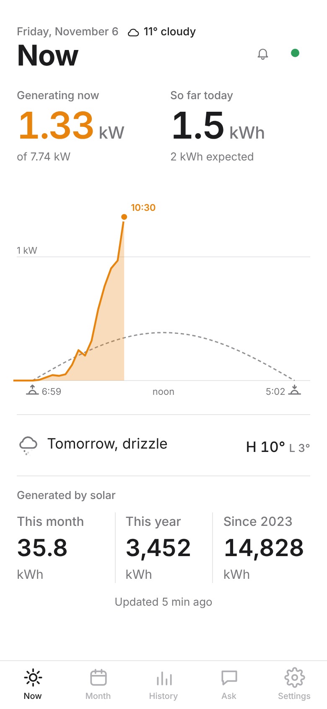
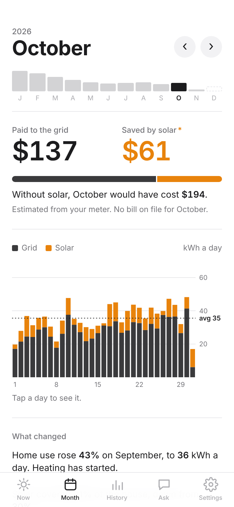
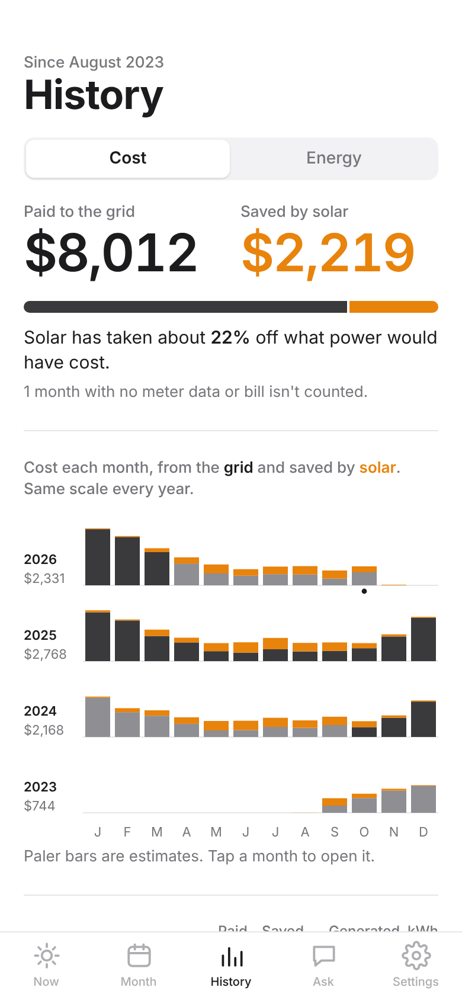
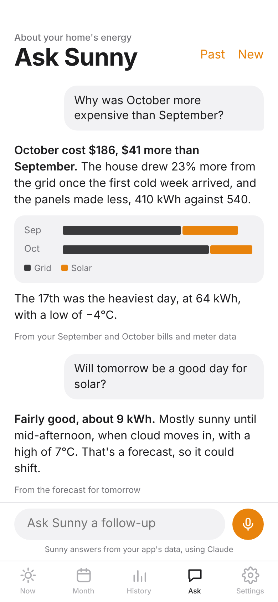
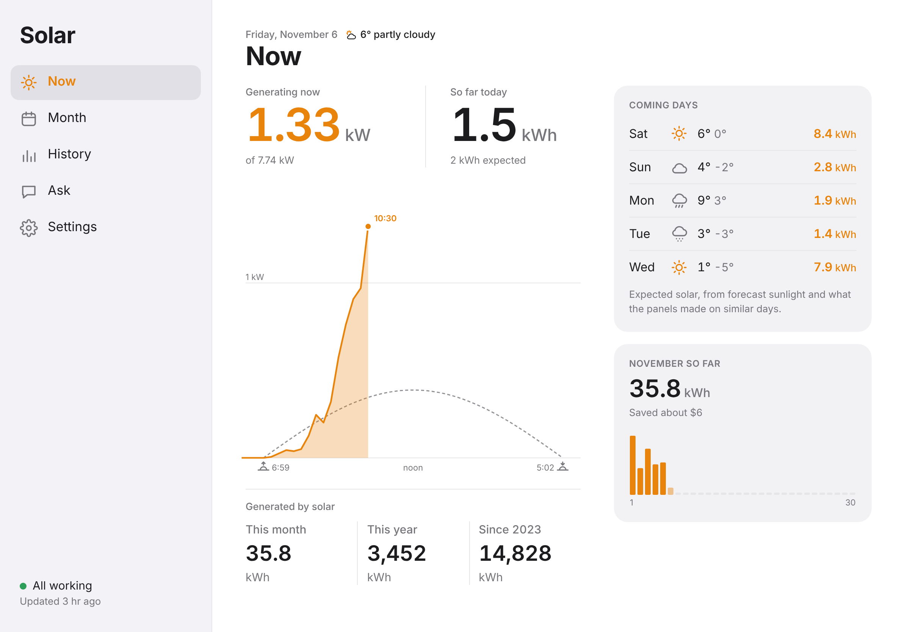

A private app for one home: what the panels make, what power costs, and what solar saves.
Solar joins two sources that never talk to each other: the SolarEdge inverter on the house (17 panels, 7.7 kW) and Toronto Hydro's meter readings and bills. It works out Ontario's net metering rules the way the bills do, so the savings are real dollars, checked against every bill on file. It has five tabs: Now, Month, History, Ask, for questions about your energy by typing or by voice, and Settings. It runs from the Home Screen of an iPhone or iPad.



At a glance (sample figures)


Power now, today's output and the expected curve, which levels off at the inverter's 6 kW limit. At night a small moon shows the real phase.
Credits, delivery, HST and the Ontario rebate are worked out the way Toronto Hydro does. Months without a bill are estimated from the meter.
Add bill PDFs, meter spreadsheets or the ecobee's history from Settings, several at once or in a zip. The ecobee data adds heating to Month and a Climate view to History.
When production stops on a sunny day, the inverter faults, SolarEdge goes quiet or a file is added, plus a monthly summary and heavy winter days.
The solar system and the Bosch heat pump, with part and serial numbers for warranty or service, and what to do in an emergency.
Everything is encrypted with a passphrase before it's published. Face ID unlocks it on a trusted device; the passphrase shows only if Face ID fails.
A scheduled GitHub job fetches SolarEdge and the weather about every hour, reads new files, rebuilds the site and sends alerts. No server to maintain.
Meter and thermostat data come from exported files, so costs and heating trail by however long it's been since the last one.
Solar
Sources and libraries
| Piece | Version | What it does | Loaded from | Licence |
|---|---|---|---|---|
| App code | App 1.78 | The five tabs, charts, net metering maths, encryption and Ask (app.js, lock.js, style.css, sw.js). No framework; charts and icons are SVG drawn for the app, text in the system font | GitHub Pages, this repo's web/ | Written for the app |
| Build job | Python 3 | Fetches data, reads bills and meter files, models costs, encrypts, sends alerts (scripts/build.py, money.py, parse_bill.py) | GitHub Actions | Written for the app |
| Transformers.js | 3.5.1 | Runs the speech model in the browser, with ONNX Runtime Web inside | cdn.jsdelivr.net | Apache-2.0 |
| Whisper tiny.en | Xenova, 8-bit | Turns a spoken question into text on the phone (about 40 MB, cached after first use) | huggingface.co | MIT |
| Python libraries | latest | cryptography (AES-GCM), openpyxl (meter spreadsheets), pywebpush (notifications) | PyPI | Apache-2.0, MIT, MPL-2.0 |
| Poppler pdftotext | Ubuntu package | Reads the text of bill PDFs | apt | GPL-2.0 |
Integrations
| Service | Used for | Details |
|---|---|---|
| SolarEdge Monitoring API v2 | Production, power now, inverter status and alerts | monitoringapi.solaredge.com/v2, OAuth through connect.solaredge.com; the refresh token rotates and is saved back as a GitHub secret. Free tier, 2,000 calls a month |
| ecobee | Heating history | No API for new developers; the Download data CSV is added from Settings and kept encrypted in data/ecobee/ |
| Toronto Hydro | Bills and hourly meter readings | No API. Bill PDFs and MyTorontoHydro spreadsheets are added from Settings; kept encrypted, the PDF isn't kept |
| Open-Meteo | Weather now, forecast, past weather | api.open-meteo.com and archive-api.open-meteo.com, no key. Called by the build, the Now screen (a week ahead on iPad), and Ask for each question |
| Anthropic Claude API | Answers in Ask | api.anthropic.com/v1/messages, model claude-haiku-5-5, called from the phone. Sends the question, recent conversation and a summary of months, bills, 120 days and the forecast. Key in the ANTHROPIC_API_KEY secret, carried inside the encrypted data |
| GitHub | Hosting, the hourly job, uploads | Pages serves the site, Actions runs the build hourly, and files from the phone arrive encrypted in data/inbox/ via the Git Data API (UPLOAD_TOKEN) |
| Web Push (Apple) | Alerts on the phone | VAPID-signed pushes from the build; subscriptions kept encrypted in data/push.enc |
| Browser features | Unlock, voice, offline | Web Crypto (PBKDF2-SHA256, AES-GCM), passkeys for Face ID unlock, microphone and Web Audio for recording, speech synthesis to read answers, a service worker, and local storage for Ask conversations |
On the phone or iPad: unlocking and decrypting, every screen and chart, transcribing spoken questions, reading answers aloud, and the calls to Claude and Open-Meteo. Files you add are encrypted before they leave.
On GitHub, about every hour: the build fetches SolarEdge and the weather, reads new files, rebuilds the site and sends alerts. The site's data is published encrypted with a key from the passphrase (PBKDF2-SHA256, 600,000 rounds); serial numbers and tokens exist only inside it.
This document: docs/overview/. Make sample data with fake_data.py, take screenshots with shoot.js, print with pdf.js.